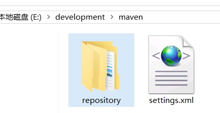
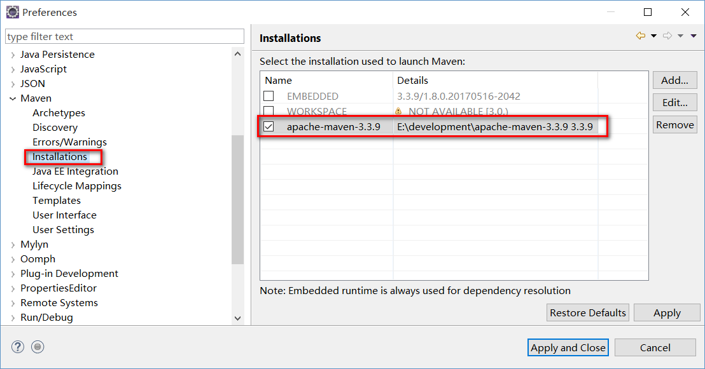
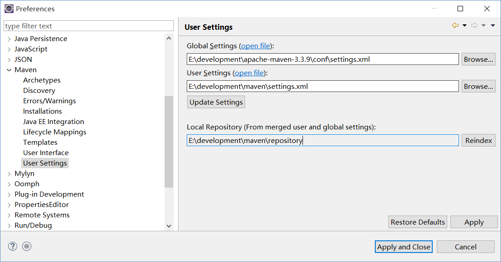

一、maven的安装
1、解压maven压缩包到某一路径下
2、配置 MAVEN_HOME
3、配置path 到 MAVEN_HOME/bin 下
二、eclipse集成maven
方法1：直接使用自带插件
1、在 用户目录/.m2 文件夹下 创建 settings.xml 文件，配置maven仓库的位置
2、在eclipse中配置maven的用户配置文件爱你路径
方法2：使用自己安装的maven 工具
1、在 maven工具 的conf路径下， 找到 settings.xml 文件，配置maven仓库的位置
2、将此配置文件拷贝到自定义的maven仓库目录 下，和 repository 同级，如下



三、配置阿里云服务器
在 settings.xml 文件的 <mirrors> 节点下添加 一个 <mirror> 节点如下
<mirror>
<id>nexus-aliyun</id>
<mirrorOf>central</mirrorOf>
<name>Nexus aliyun</name>
<url>http://maven.aliyun.com/nexus/content/groups/public</url>
</mirror>
|